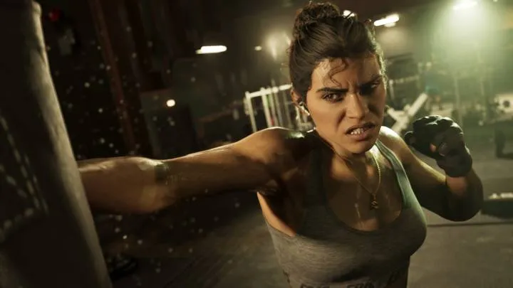
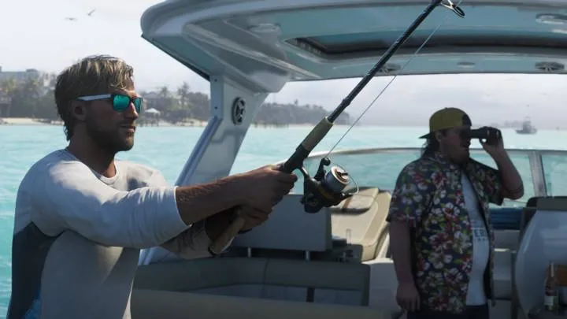
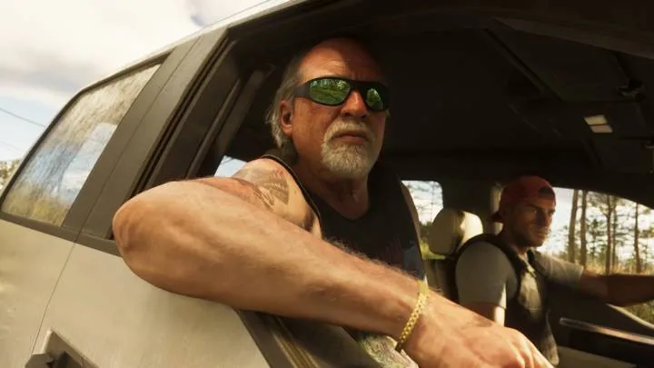

Опубликовано:
- Сюжет GTA 6 — пролог и 5 глав, всего 91 сюжетная миссия (по списку PC Gamer; Push Square считает 93).
- Самая длинная глава — третья (26 миссий), самая короткая — пятая (7).
- Переигровки миссий нет, медалей тоже — сохраняйтесь вручную, слотов 15.
- После финала открываются читы и чек-лист 100%, играть можно дальше.
Главы
| Глава | Название | Миссий | Где |
|---|---|---|---|
| Глава 1 | Just Like Paradise | 22 | Leonida Keys |
| Глава 2 | Paradise Lost | 11 | Port Gellhorn |
| Глава 3 | Tits Ass Drug Money | 26 | Вайс-Сити |
| Глава 4 | Vice City, Baby | 25 | Вайс-Сити |
| Глава 5 | Top of the World, Ma | 7 | Вайс-Сити |
Готовые прохождения





Как устроены миссии
- Нет переигровки и медалей. В отличие от GTA 5, пройденную миссию заново не запустить, а «золота» за выполнение условий нет. Выбор в сюжете и пропущенные предметы — навсегда.
- Ручные сохранения. 15 слотов: сохраняйтесь в начале каждой главы и перед большими делами — к этим точкам можно вернуться.
- Свобода порядка. Часто открывается сразу несколько миссий: например, в главе 1 после Gone Fishing четыре задания можно пройти в любом порядке.
- Двое героев. Часть миссий — за Джейсона, часть — за Лусию, многие — вдвоём. Подробнее — Два героя.
- Деньги — с главы 3. Там открываются скупщики, заказы на машины, а после миссии Credit Check — ограбления банков и микрозаймов по всей карте.
Побочные миссии по персонажам
Кроме сюжета, в Леониде есть цепочки побочных заданий — их выдают отдельные персонажи (значки фиолетового и чёрного с розовой буквой цвета). Для 100% нужно 100 побочных заданий. Список — по Push Square:
| Персонаж | Задания |
|---|---|
| Andy | Climbing the Cellerichain · Pay the Cellerica Fee · Peach! · Read the Label · Puff Puff Pass |
| Billy | Thrillbillies · Twist Wrist, Smash, Grab · Mall Rats · The Impaler · Hometown Heroes |
| Bret Vogel | Veteran Hunted (охота, только Джейсон) |
| Eddie Acosta | Attend Eddie Acosta’s Party |
| Kenton | Maritime Disputes (сокровища затонувших кораблей) |
| Kirk | Skunk Apeology 101 · Advanced Skunk Apeonomics |
| Randy | ¡Dale Mamba! |
| Papa Audacity | The Unknown Stuntman · Trial by Tire · Quit Your Job · Sell Your House · Stunt Audacity |
| Pilot Pete | Passing the Torch · Backseat Pilot · Hostile Takeover · Stormy Weather · Over and Out |
| Shirley | Get Shirley’s Rum · Steal the Scooter (только в главе 1) |
| Tyrone | Take Out Kitty Litter |
| Yago | Join a Street Race · Bumper to Bumper · Race Against Yago (ограничено по времени) · Brother to Brother |
Советы перед стартом
Как уходить от полиции, где держать деньги и что собирать с первого часа — в статье Советы новичку GTA 6. Сколько всего часов — в статье Сколько длится GTA 6. Всё для 100% — в чек-листе, читы — на странице Читы GTA 6.
Частые вопросы
Сколько миссий в GTA 6?
91 сюжетная миссия в 5 главах — по списку PC Gamer. Push Square насчитывает 93, относя к сюжету два задания Билли.
Сколько глав в GTA 6?
Пять: Just Like Paradise, Paradise Lost, Tits Ass Drug Money, Vice City, Baby и Top of the World, Ma. Перед первой — пролог.
Можно ли переиграть миссию в GTA 6?
Нет. Переигровки и медалей за миссии нет — делайте ручные сохранения, слотов 15.
Можно ли играть после финала?
Да: после титров Леонида остаётся открытой, появляются читы и чек-лист 100%.
Источники: PC Gamer, «GTA 6 mission list», 19.11.2026; Push Square, «GTA 6: Chapters & Story Missions», 19.11.2026; GTABase, «GTA 6 100% Completion Guide», 19.11.2026; PowerPyx, прохождения миссий главы 1, 19.11.2026; Interesting Engineering, 19.11.2026.